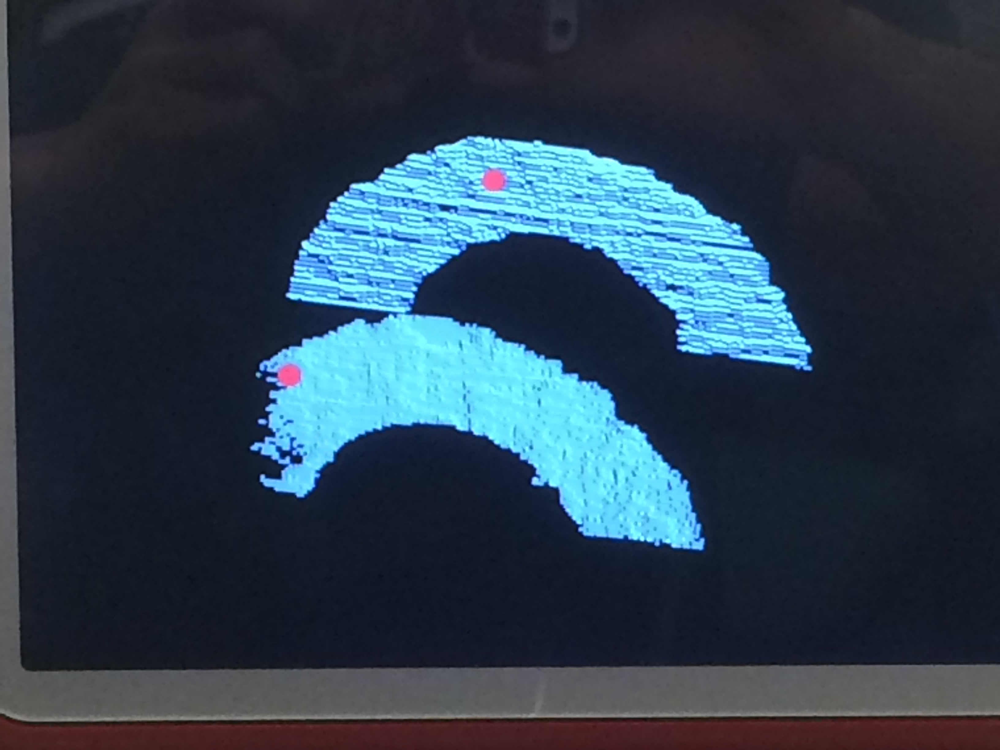
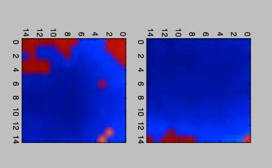
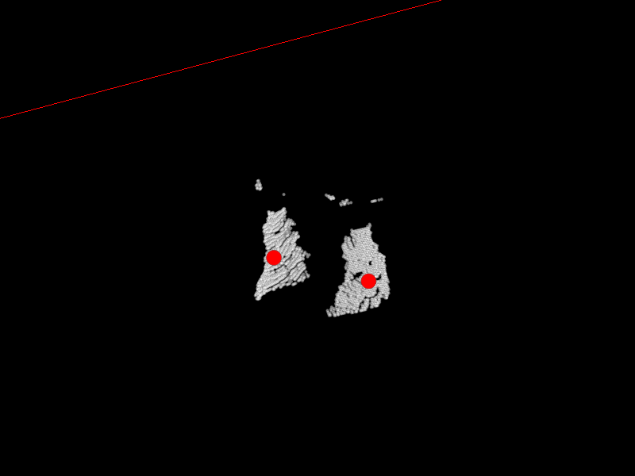
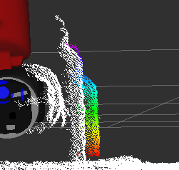

Results
Here are some videos of our experiments. These experiments involve creating a point cloud model, generating grasps, and performing grasps.
Duct Tape
This grasp was intentionally skewed, as the points chosen for contact were skewed, as shown below in the first image.
Pepto-Bismol
Here is a grasp performed on a full Pepto-Bismol bottle.
Water Bottle
Here is a grasp performed on a half-full water bottle.
A Failure Mode
This grasp is an example of the many grasps that failed because Baxter made contact with the object and pushed it away.
Pictures with Analysis

Here we see a sample of contact points that are not parallel to the table, but as seen in the video, still works.

Here is an image of the featurization of the water bottle.
Problems
A few major issues we had were with the MoveIt-Python interface. RRT is probably not the best algorithm to use if your experimental setup is fragile, since the motion plan returned could potentially span a wide space in the real world. Also, MoveIt has a lot of trouble finding trajectories in the first place, and because of that, we weren't able to get as many experiments done as we would have liked.
Using the Xbox Kinects caused a bit of trouble because of their lower resolution cameras. With lower resolution, the AR tracking package becomes less accurate, and that causes issues with generating proper point clouds.
Another issue we had was the distortion due to the inaccuracy of AR Tags and Kinects. Shown below is the point cloud with the environment, and then the filtered point cloud in color. You can see that there is a gap between the point cloud halves, and a bit of distortion when we process the raw point cloud.


Conclusion
With our project, we were able to combine the techniques that we learned in machine learning and the theory that we were taught in robotics. In doing so, we obtained a greater mastery over the topics presented to us this year. The system that we created can not only be used to score how well simulated data can predict grasp quality, but it can also be used to generate labeled data for further experimentation.
Future plans for this project could include: choosing a different neural network architecture, utilizing the reflex hand, and/or choosing a different way to generate point clouds of the object.